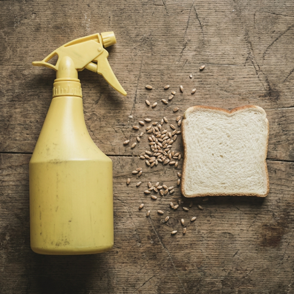
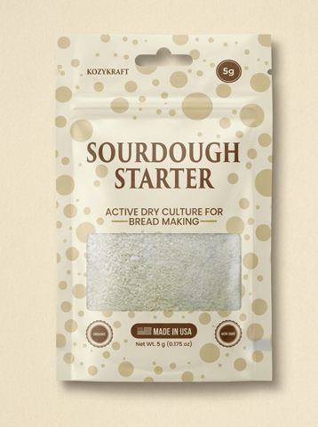
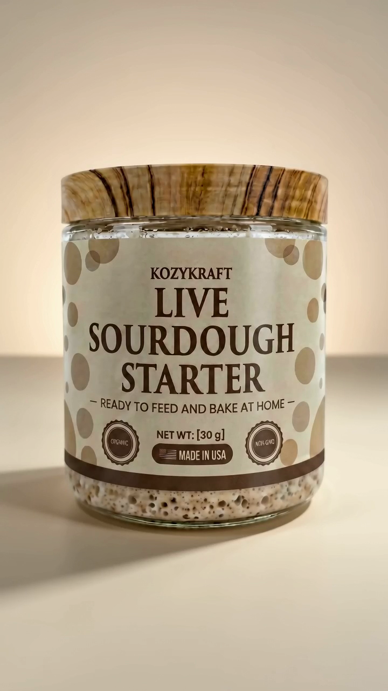
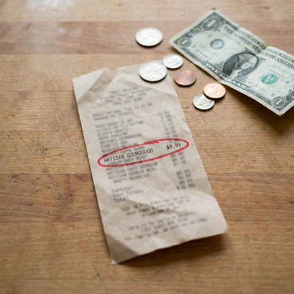
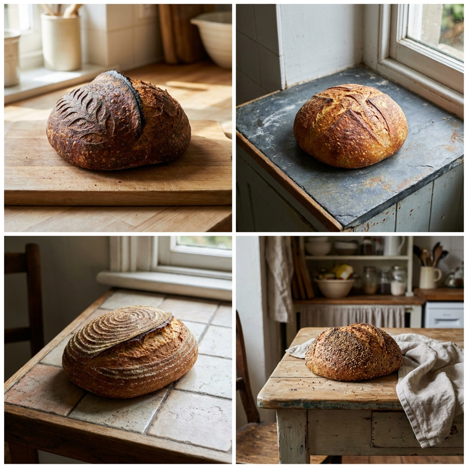

9 Reasons This Hand-Crafted Ohio Sourdough Starter Is Making Thousands Quit Store-Bought Bread For Good
"What I Learned After 3 Years Of Failed Sourdough Starters"

01. It's not soaked in glyphosate like the bread in your pantry
Most commercial wheat is sprayed with glyphosate right before harvest. The World Health Organization's International Agency for Research on Cancer classified it as a "probable human carcinogen" (IARC Group 2A, 2015), and ongoing research links it to gut microbiome damage and hormone disruption. KozyKraft starter is grown with nothing but organic flour and filtered water — the way bread has been made for thousands of years.
02. No "dough conditioners" or industrial additives that wreck your gut
Read the label on any grocery loaf and you'll find ingredients most people can't pronounce — azodicarbonamide (banned in Europe and Australia), DATEM, mono- and diglycerides, calcium propionate. These exist to give factory bread shelf life and a pillowy texture. Many have been linked to gut irritation and inflammation. A loaf from a KozyKraft starter contains exactly four ingredients: flour, water, salt, and time.
03. Long fermentation breaks down the gluten that hurts your stomach
If wheat makes you bloated, gassy, or foggy — it may not be the gluten itself. It may be that you've never had properly fermented bread. A real sourdough ferment (24–48 hours, not 90 minutes like grocery bread) lets wild bacteria pre-digest much of the gluten and phytic acid. Many people who can't tolerate commercial bread report no symptoms with long-fermented sourdough. This is how humans ate wheat for thousands of years before industrial yeast existed.
04. It actually works — every batch is tested before it ships
Most starter kits arrive dead or weak — you wait days for bubbles that never come. KozyKraft starter is activated and tested before it ships. Just rehydrate, feed, and within 12–24 hours you'll see active bubbling. Most customers bake their first loaf within 5 to 7 days — the time the wild culture needs to build full strength. We've shipped thousands of starters to home bakers nationwide.
05. Hand-crafted in small batches in Ohio — not mass-produced in a factory
Most "artisan" sourdough starters on Amazon are dehydrated in industrial facilities — often overseas — then re-packaged with a homespun label. KozyKraft is different. Every batch is grown, fed, and dehydrated by hand in our small kitchen in Ohio by people who've been baking sourdough for decades. We don't run a factory. We run a kitchen. You can taste the difference in the first loaf.


06. It's a living heritage starter — not a lab-bred yeast strain
The starter you'll receive is a direct descendant of a culture we've maintained for years. It carries diverse strains of wild yeast and lactobacillus bacteria — the kind that produce the deep, tangy, nutty flavor real sourdough is famous for. Cheap starters often rely on a single strain of Saccharomyces cerevisiae — the same yeast in commercial beer. There's no comparison in flavor or fermentation depth.

07. Cheaper than buying bread — by a lot
Real sourdough at the grocery store runs $7–$10 a loaf. A bakery loaf runs $9–$14. One KozyKraft starter feeds you indefinitely — properly maintained, our starter can be kept alive for years and passed down. The actual cost per loaf? About $1.20 in flour and salt. Bake twice a week and you could save up to $1,500+ per year on bread alone.
08. Support a small American family business — not a corporation
Every order goes directly to a small team in Ohio. No warehouse, no venture capital, no overseas manufacturer. When you buy a KozyKraft starter, you're keeping a thousands-of-years-old craft alive and putting food on the table for a real American family. You can't say the same about the bread aisle at Walmart.

"We started KozyKraft because we couldn't find a starter that actually worked the first time. Every jar leaves our kitchen tested, alive, and ready to bake."
— Abdel & Amr, KK Co-Founders

09. 5-Star Reviews + "It Works" Guarantee
★ ★ ★ ★ ★
If your starter doesn't activate within 30 days of feeding, we'll ship you a free replacement — no questions asked. We've sent thousands of starters to homes across the country and our customers keep telling us the same thing: "I'll never buy bread again." That's the goal.
How KozyKraft Compares To Every Other Sourdough Starter On Amazon
| KozyKraft | Brand A | Brand B | Brand C | |
|---|---|---|---|---|
| Hand-made in a small US kitchen | ✓ Ohio | Not specified | Not specified | Industrial scale |
| Both dehydrated AND live formats offered | ✓ Both available | ✗ Dehydrated only | ✗ Dehydrated only | ✗ Dehydrated only |
| Time to first loaf (typical) | Live: 24–48 hrs Dehydrated: 5–7 days |
14+ days | 10–14 days | 14+ days |
| Each batch tested before shipping | ✓ Every batch | Not publicly stated | Not publicly stated | Not publicly stated |
| Free-replacement guarantee | ✓ 30-day | Standard Amazon return | Standard Amazon return | Standard Amazon return |
| Starting price | $6.99 | $11+ | $9+ | $14+ |
Comparison reflects publicly listed details of competing sourdough starter brands available on major US retailers as of May 2026. Pricing and offerings may change.
What Real Customers Are Saying
A selection of verified buyer reviews from Amazon. Drawn from the most recent feedback.
"Impressed with this sourdough starter! It comes in a kitchen-tested jar (literally!) — let's me know it is made fresh. Treat it like your own homemade starter, because it basically is. I usually make my own starter, but our oven stopped working and all my starter went bad. My oven is good now and I've been baking with this starter, and the bread quality is fantastic. Rise is perfect, strength is there, and the taste is spot on sourdough — tangy and delicious. Would definitely buy again for my sourdough fix!"
"I ordered the KozyKraft Live Wet Sourdough Starter Jar and was really happy with the quality. It arrived fresh, well-packaged, and ready to feed right away. The instructions were simple to follow, and within a short time it became very active and bubbly."
"I was shocked at how easy this starter was to use! Instructions are simple and easy to follow, and the starter came to life right away. I was able to convert it to a (mostly) gluten-free starter by feeding it gluten-free flour. Within a week it was healthy enough to bake with! The bread tastes delicious and has a wonderful sourdough flavor."
"I was so hesitant to give this a go — it's intimidating! However, the little container gives detailed information on how to get this started, and was very easy to follow. It was hard to decide whether I should continue, but I'm glad I did!"
"I've been using this product for a few weeks now and I'm really impressed. The quality is excellent, it works exactly as described, and it arrived quickly in great packaging. You can tell it's made with care and attention to detail. I've already recommended it to friends."
Frequently Asked Questions
Will the starter arrive dead?
Every batch is tested for activity before it ships. If yours doesn't activate within 30 days of feeding, we send a free replacement — no questions asked.
How long until I can bake my first loaf?
Most customers bake their first loaf within 5 to 7 days of starting their daily feedings. The wild culture needs that time to build full strength. Compare that to traditional flour-and-water starters which typically take 14+ days.
Why is the price so low? Is something wrong with it?
Nothing's wrong — we're a small Ohio kitchen, not a corporate brand. We don't pay for big-box retail markups, celebrity endorsements, or warehouse overhead. Our cost stays low so yours can too. The $6.99 price reflects 5 grams of pure starter culture (enough for a lifetime of baking if maintained).
I have a gluten sensitivity — can I eat this bread?
Sourdough is not gluten-free. However, the long fermentation process breaks down a significant portion of the gluten and phytic acid that cause discomfort for many people. Many customers report that they can eat properly fermented sourdough comfortably even when they can't tolerate commercial bread. If you have celiac disease, consult your doctor — sourdough is not safe for celiacs.
What's the difference between the dehydrated pouch and the live jar?
The dehydrated pouch is dormant — just-add-water, takes 5–7 days to first loaf. The live jar is an already-active culture — feeds within hours, can bake within 1–2 days. Both produce identical bread; the live jar is just faster to get going. Most first-time bakers choose the dehydrated for value; experienced bakers often pick the live jar for speed.
How do I maintain the starter long-term?
Once active, feed it 1:1:1 (starter : flour : water) every 12–24 hours at room temperature, or once a week if stored in the fridge. We include written care instructions with every order, plus an email support line for questions.
What if I change my mind?
Amazon's standard 30-day return policy applies. On top of that, our "It Works" guarantee means if your starter doesn't activate within 30 days, we ship a free replacement regardless of what Amazon's return window says.
What you'll receive
- One jar of KozyKraft sourdough starter — 5g dehydrated pouch or 30g live wet jar, depending on your choice
- Step-by-step feeding instructions — printed card, beginner-friendly, plus a digital copy by email
- Email support line — write us anytime if your starter slows down or you need help
- 30-day "It Works" replacement guarantee — if your starter doesn't activate within 30 days, we ship a free replacement, no questions
Free Prime shipping · Ships from Ohio · 30-day "It Works" guarantee